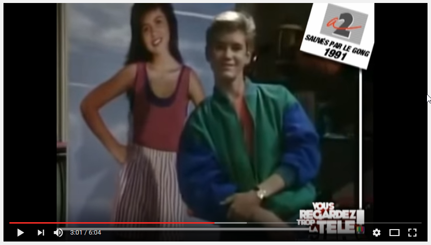
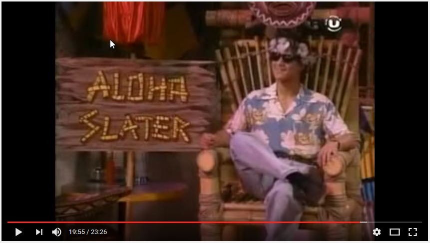
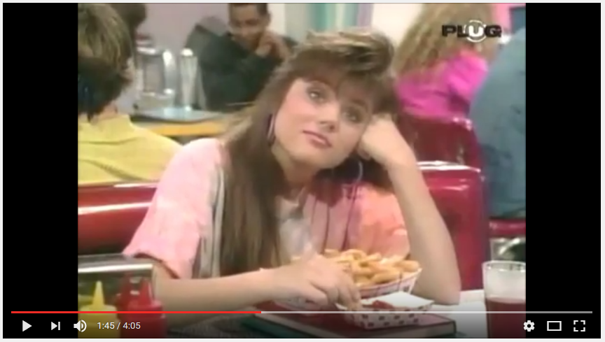

Un concours de danse est organisé chez Max. Zack et Slater se défient pour savoir lequel d'entre eux pourra être le cavalier de Kelly. Mais alors que Slater a montré de belles capacités, Zack a bluffé : il ne sait pas aligner deux pas de danse. Il demande alors à Jesse de lui apprendre afin de pouvoir impressionner la belle Kelly...
Afin de féliciter sa petite fille chérie pour ses bonnes notes, le père de Lisa lui prête sa carte de crédit afin qu'elle puisse s'offrir ce qui lui plaît. Mais Lisa dépasse les bornes et explose son budget. Affolée à l'idée de se faire gronder, elle décide de ne rien et de récolter de l'argent afin de le rembourser. Mais les conseils de Zack ne sont pas toujours bons...
Touché par la foudre, Screech peut désormais prévoir le futur. Ça tombe bien, une interro très importante se profile à l'horizon... et Zack compte bien profiter des dons de Screech pour se rapprocher de Kelly !
Un bal est organisé... et comme d'habitude Zack et Slater souhaitent avoir pour cavalière Kelly, mais cette dernière ne peut pas encore leur donner sa réponse. Zack apprend que Jesse va organiser une soirée pyjamas entre filles. Il décide alors de planquer un micro dans la chambre afin d'écouter la conversation et de savoir qui Kelly compte choisir. Mais les filles découvrent l'installation et décident alors de piéger Zack...
Les parents de Screech partent en voyage, le laissant tout seul à la maison. Zack et Slater décident de passer une soirée entre garçons chez lui. Tout se passe bien jusqu'au moment où, surpris par l'arrivée des filles, ils cassent le buste d'Elvis, objet sacré pour la mère de Screech...
Le Major Slater est transféré à Hawaï mais A.C. refuse de quitter Bayside. Zack, bien décidé à voir partir un rival, imagine un stratagème pour s'en débarasser. Il lance une rumeur : Slater serait mourant...
Zack et ses amis organisent une fête foraine pour financer leur voyage au ski. Mais il se pourrait bien que Zack ne soit pas du voyage : Belding a convoqué son père afin de parler de ses résultats catastrophiques. N'ayant aucune envie de manquer la virée, Zack engage un acteur pour interpréter son père...
Suite à une expérience ratée en cours de chimie, Screech et Zack obtiennent une crème miracle contre les boutons. Flairant le bon coup, Zack décide de la vendre à ses camarades de Bayside. Mais très vite, des effets secondaires apparaissent : les parties du corps recouvertes de la crème prennent une drôle de teinte ! Cela tombe mal : Kelly, qui en a fait usage, doit participer à un concours de beauté...
C'est la semaine d'orientation professionnelle de Bayside, les élèves en profitent pour réfléchir à leur future carrière. Pour Jesse, c'est tout décidé : elle va faire du droit. Lisa souhaite devenir styliste, Kelly se verrait bien en femme au foyer, Screech se destine à devenir astronaute et Zack compte bien devenir présentateur télé. Mais Slater ne sait pas encore...
Kelly a deux billets pour le concert de George Michael mais ne sait pas qui choisir pour l'accompagner... elle ne sait même pas si elle pourra y aller. Sa dernière note en sciences est si catastrophique que ses parents pourraient la priver de sortie. Zack, bien décidé à aller au concert avec elle, lui trouve un prof particulier pour améliorer ses notes : Screech !
Dans le cadre de leur cour d'économie, les élèves de Bayside doivent monter une petite entreprise. Zack et ses amis décident de commercialiser des bracelets de l'amitié. Leur projet est accepté et la bande se met au travail. Mais très vite des dissensions apparaissent au sein du groupe...
Zack et ses amis sont soumis à une nouvelle expérience : pendant une semaine, ils vont devoir vivre la vie de couples mariés. Zack réalise son rêve en ayant Kelly pour femme, Jesse se retrouve avec le très macho Slater et Screech est aux anges : Lisa joue sa femme ! Mais la vie de couple n'est pas toujours simple...
C'est l'effervescence à Bayside : les élèves doivent élire leur président. Tout naturellement Jesse se présente et espère bien l'emporter pour changer les choses. Dans la course à la présidence, elle a pour adversaire... Zack ! Mais ce dernier a des motivations nettement moins avouables...
Mademoiselle Wentworth explique à ses élèves un concept qui intéresse tout particulièrement Zack : le message subliminal. Subtilement caché dans une publicité, une chanson ou un film, il permet d'influencer les gens. Pour Zack, c'est le moyen idéal pour échapper à une sanction de Mr Belding et pour convaincre Kelly de le choisir pour partenaire à un bal...
C'est la rentrée à Bayside et Zack a bien l'intention de profiter de cette nouvelle année pour enfin conquérir le coeur de Kelly. Mais c'est sans compter l'arrivée d'un nouveau : AC Slater...
A l'approche de la finale de la compétition des pom-pom girls, la rivalité entre Bayside et le lycée de Valley est à son comble. Les deux parties ne s'épargnent aucun coup bas, y compris le kidnapping de leurs mascottes respectives...